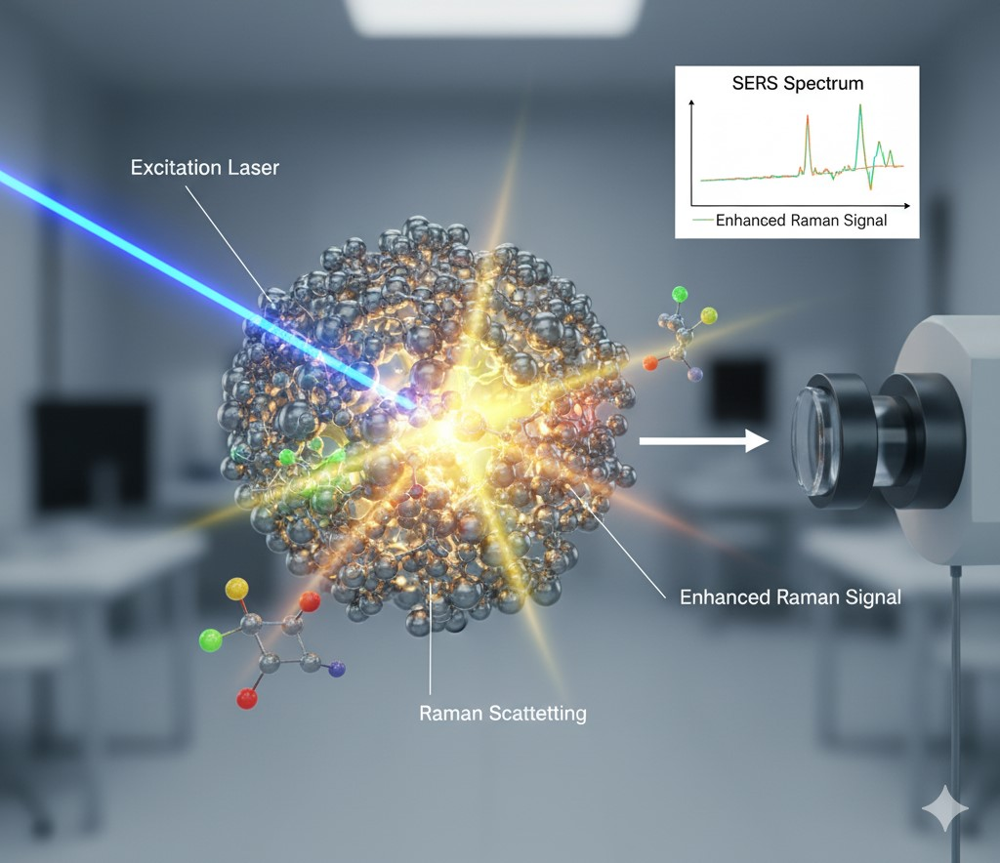
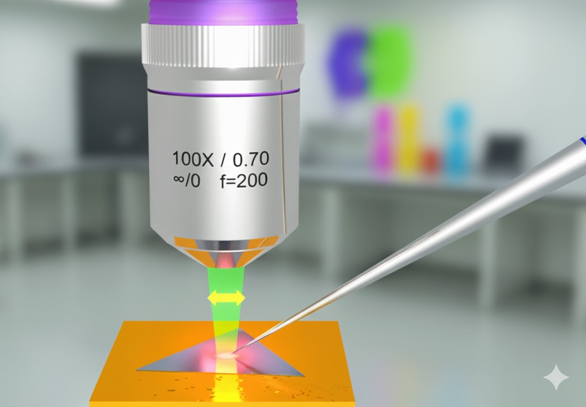
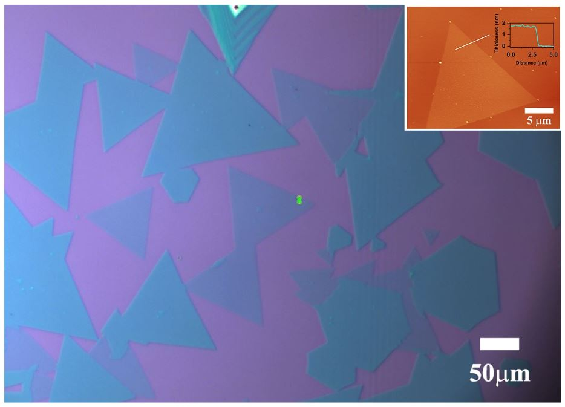
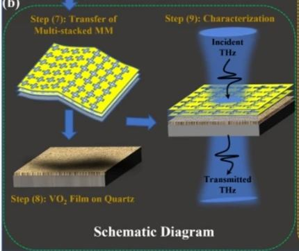
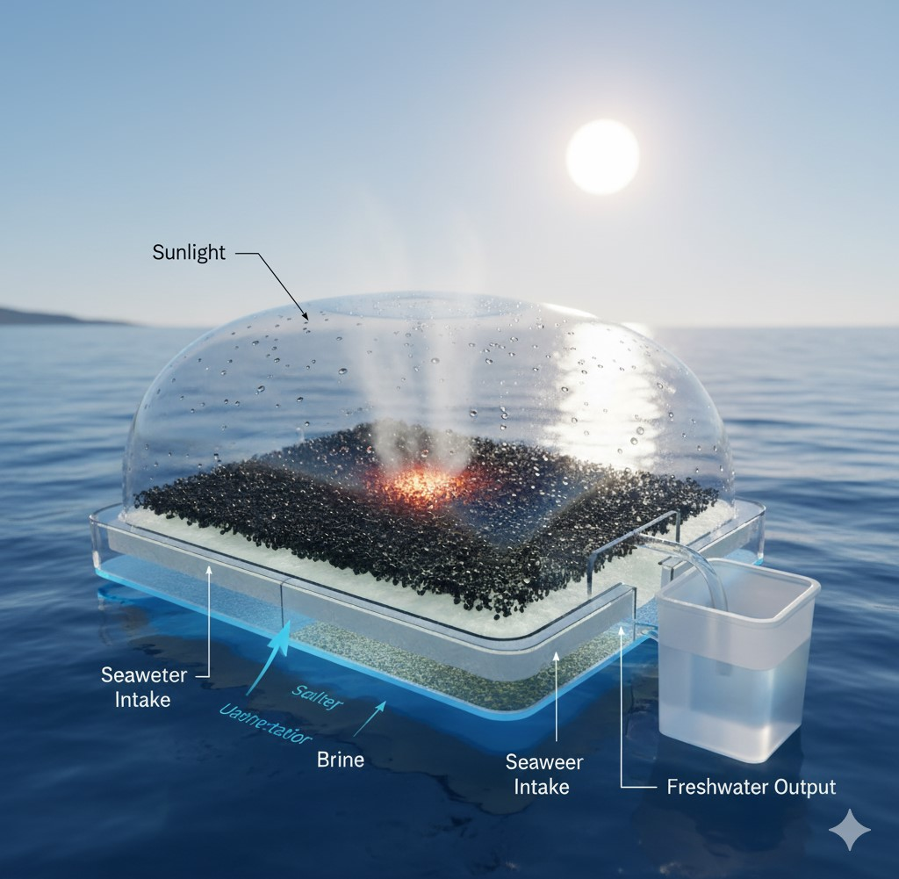
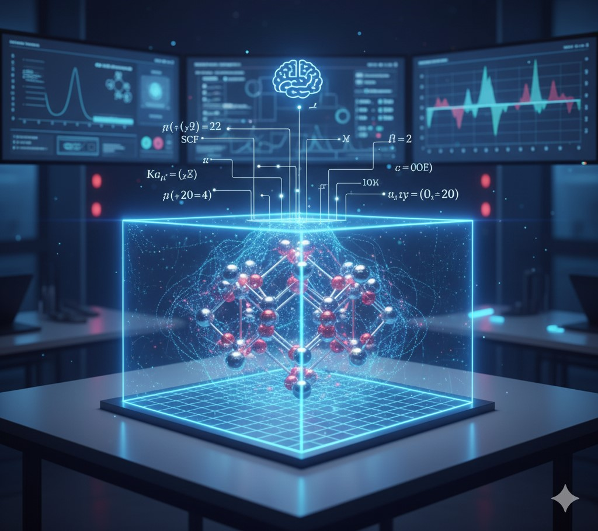

Research 🧪
Research Highlights
Research Interests
- Atomic-scale defect engineering in low-dimensional semiconducting oxides for SERS sensing.
- CVD growth of 2D semiconducting materials and their heterostructures.
- Study of carrier dynamics and charge transport in 2D semiconductors and 2D materials heterostructures with TERS.
- Design and fabrication of metamaterials for next-generation 6G communication technologies.
- Applications in photothermal-driven solar water desalination, photocatalytic hydrogen evolution, and neuromorphic devices (artificial synapses).
Research Areas

SERS & Biosensing

Defect Engineering

Tip-Enhanced Raman Spectroscopy (TERS)

CVD Growth of 2D Materials

Neuromorphic/Artificial Synapse Devices

Metamaterials for THz Applications

Solar Water Desalination

DFT Simulation
Instrumentation Skills
- Raman Spectroscopy (Horiba LabRam HR, Operator 2021-2024)
- Field emission Scanning Electron Microscope (FESEM) (JEOL JSM-7610F, Operator 2022-present)
- Photoluminescence Spectroscopy (Horiba Scientific)
- Reactive Ion Etching (RIE) (Nano Master Inc. NRE 4000, Operator 2022-2024)
- Chemical Vapour Deposition (CVD) (Homebuilt Setup)
- Plasma Enhanced Chemical Vapour Deposition (PECVD) (Nano Master Inc. NRE 4000)
- Thermal Deposition (HiHindVac)
- RF Sputtering (HiHindVac)
- UV-Visible Absorbance Spectrometer (Shimadzu)
- Atomic Force Microscopy (AFM) (Bruker, Innova)
- Energy Dispersive X-ray Spectroscopy (EDX) (JEOL JSM-7610F, Operator 2022-present)
Technical Skills
- Programming Language: Fortran
- DFT Simulation Packages: Quantum Espresso, Gaussian16
- EM Simulation Package: CST Microwave Studio
- Web Technologies: HTML, CSS